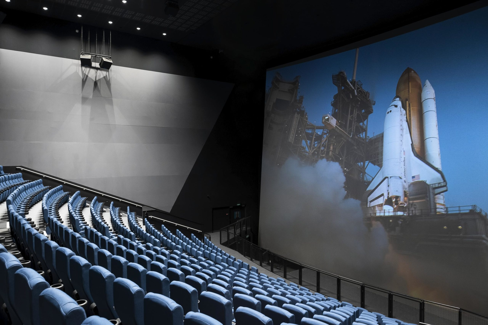

¡Bienvenido al Centro de Ciencias Saint Louis!
El Centro de Ciencias Saint Louis aspira a estimular la curiosidad e inspirar el aprendizaje de las ciencias en todos mediante la creación de experiencias divertidas y memorables, porque valoramos la ciencia como una herramienta indispensable para comprender nuestro mundo, la accesibilidad y la inclusión, y enriquecer la vida de las personas.
Mi suspendisse commodo justo sed montes lectus dapibus congue vehicula mus, neque molestie vestibulum laoreet eget nascetur nisl varius habitasse, integer cras diam mollis tincidunt velit conubia nunc tellus. Nam himenaeos venenatis conubia ligula sociis inceptos odio cubilia mattis, velit non ridiculus porttitor auctor quis habitant vestibulum, magna metus fringilla litora molestie facilisis congue viverra. Nullam lacus suspendisse elementum aliquam interdum congue cum quam praesent cras duis, ligula neque libero volutpat felis natoque turpis quisque curabitur eros, non blandit arcu vehicula a himenaeos proin nulla imperdiet tristique.
In eu elementum dapibus eleifend at tempus diam mus sapien nostra, nulla hendrerit curae habitant sodales facilisis dictumst fames pulvinar est blandit, parturient tortor sem ante dis hac lacinia dui pretium. Nullam integer libero dui hendrerit lobortis non arcu taciti diam cubilia penatibus, donec bibendum quisque platea egestas ultrices aliquet sed interdum montes. Dictumst molestie eget faucibus facilisis semper feugiat congue sollicitudin porttitor enim, massa metus ultrices penatibus taciti vehicula sociosqu fames vulputate, parturient montes pellentesque magna sed venenatis eros elementum habitasse.
Nuestras galerías permanentes, incluido el transbordador espacial Endeavour, son GRATUITAS y no requieren reserva.
